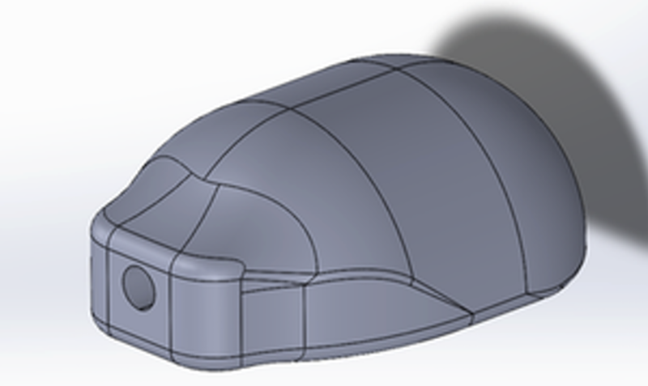
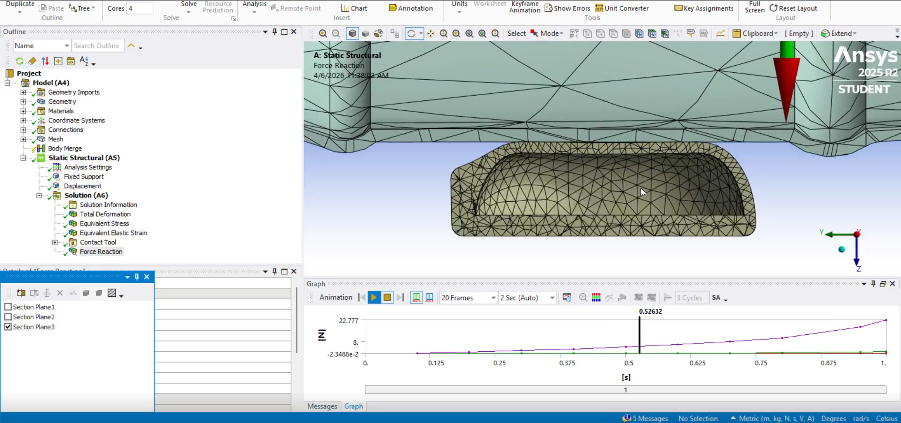

Soft pneumatic chamber
A 3D-printed chamber forms the soft sensing element.
UNDERGRADUATE RESEARCH · 2024–2026
Development of a wearable soft robotic sensing platform designed to measure grasp pressure and provide feedback through an augmented reality interface. The system brings together a 3D-printed pneumatic sensing chamber, embedded electronics, wireless data transmission and a Unity-based feedback environment.

The project focuses on developing a wearable soft pressure-sensing system for grasp rehabilitation. A pneumatic chamber deforms under contact, while a pressure sensor and embedded electronics support pressure measurement and wireless data transmission.
The intended feedback workflow connects the measured pressure to a Unity-based augmented reality interface, providing a visual indication of grasp pressure.
A 3D-printed chamber forms the soft sensing element.
The sensor converts pneumatic pressure into an electrical signal.
The microcontroller supports acquisition and wireless transmission of pressure data.
The interface presents grasp-pressure feedback for the rehabilitation workflow.
The sensing element uses a 3D-printed pneumatic chamber. Its CAD geometry defines the chamber structure and provides the basis for integrating the pneumatic connection and the pressure-sensing hardware.

The chamber is the soft mechanical component of the sensing system. Its geometry is designed to support pressure sensing during contact.
The CAD model provides the starting point for fabrication and subsequent integration with the pressure sensor.

ANSYS was used as part of the engineering analysis of the sensing chamber. The simulation image documents the analysis workflow associated with the designed geometry.
Specific material properties, boundary conditions, numerical outputs and validation conclusions can be added here when the corresponding simulation results are ready to present.
The electronics integrate the pressure sensor, an ESP32-C3 Mini microcontroller and a compact LiPo battery. The sensing circuit provides the interface between the pneumatic sensing element and the embedded acquisition system.

The circuit diagram identifies the pressure sensor, microcontroller connections, power supply and signal wiring used in the sensing setup.
The ESP32-C3 provides the embedded platform for processing the sensor signal and transmitting pressure data wirelessly.

The electronics pack brings the battery and microcontroller into a compact wearable assembly. The CAD design documents how the components are arranged within the enclosure.
This integration supports the goal of a wearable sensing platform rather than a permanently bench-mounted circuit.
The system overview illustrates a Unity-based augmented reality feedback interface for grasp pressure. The visual concept presents pressure feedback using a graded indicator, helping communicate whether a grasp is too light, appropriate or too heavy.
The interface is intended to connect sensor measurements with visual feedback in the rehabilitation workflow. The exact interaction design, calibration method and evaluation results should be documented alongside the corresponding implementation and test evidence.
A visual scale communicates different grasp-pressure levels.
The embedded platform is designed to transmit pressure measurements wirelessly.
Unity provides the interface for presenting pressure-related feedback.
CAD design and 3D-printed soft pneumatic sensing chamber.
ANSYS finite element analysis as part of the engineering design workflow.
Pressure sensor, ESP32-C3 Mini, battery and wireless data transmission.
CAD-designed electronics pack for the sensing hardware.
Unity-based visual representation of grasp-pressure feedback.
Technical documentation and manuscript preparation.
In preparation · 2026